El espacio y la próxima frontera
Cómo nacen las grandes misiones: el caso JWST, el Decadal Survey y Cosmic Vision, y el catálogo de proyectos que vienen — Euclid, Roman, ELT/GMT/TMT, Habitable Worlds, Lynx, Athena, ngVLA, LISA y Xuntian.
Un flagship demora ~30 años entre la idea y la primera luz. La clase muestra el «detrás de bambalinas»: cómo una comunidad llega a consenso, cómo se consigue la plata, y qué máquinas están en el pipeline en cada longitud de onda — y en ondas gravitacionales.
¿Cómo nace una misión espacial? El caso JWST
De la idea (1989) al lanzamiento (2021): 32 años. La escala típica de un flagship.
El James Webb nació como NGST (Next Generation Space Telescope): la «siguiente generación» después de Hubble. Lo notable es que la idea se anunció en 1989, antes de que Hubble fuera lanzado (abril de 1990) — y antes de saber si Hubble funcionaría siquiera (recordemos que salió con la óptica defectuosa y hubo que instalarle una corrección en órbita).
- 1989 — se empieza a discutir el NGST.
- 1996 — se propone formalmente: un telescopio de 8 m.
- 2001 — el NGST alcanza máxima prioridad en el Decadal Survey: las agencias empiezan a poner plata en serio.
- 2002 — se rebautiza como JWST y el espejo baja a ~6,5 m.
- 2004 — comienza la construcción (contratista principal: Northrop Grumman, una empresa de defensa).
- 2011 — casi se cancela: el presupuesto se pasó «por un factor chiquitito de 10». Una task force fiscaliza, reorganiza los procesos entre NASA y Goddard, fija un nuevo presupuesto y el proyecto se ejecuta dentro de él.
- 2021 — lanzamiento el 25 de diciembre; llega a L2 en enero de 2022.
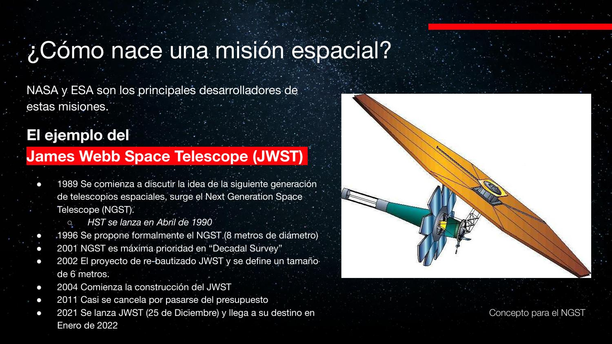
Cuando se diseñó Hubble se pensaba en un espejo de 3 m. Los contratistas (todos con negocios militares) sugirieron 2,4 m — un número «arbitrario» que delataba que ya sabían fabricar espejos de ese tamaño para satélites espía. Análogamente, el NGST bajó de 8 m a ~6,5 m tras negociar con la industria. Como dijo el profesor: «probablemente existe más de un telescopio de 6 metros en el espacio… apuntando para el otro lado».
El audio dice que James Webb costó «10 millones de dólares» y Hubble «16 millones». Las diapositivas confirman las cifras reales: USD 10 mil millones (JWST) y USD 16 mil millones acumulados (Hubble, aprobado por el Congreso en 1977). El transcriptor perdió sistemáticamente el «mil». Para dimensionar: en EE.UU. se gasta más en dulces de Halloween cada año que el costo total de JWST repartido en sus décadas de desarrollo.
Ingeniería en el vacío
Por qué estas máquinas demoran 30 años: cada subsistema es un problema de ingeniería sin solución de catálogo.
Enfriar sin aire
Un computador en tierra se enfría con ventiladores o con circuito líquido + radiador: en ambos casos el calor termina entregado al aire por convección. En el espacio no hay aire: la única salida de calor es la radiación. Hay que diseñar caminos térmicos (conducción hacia radiadores que emiten al vacío) para que la electrónica no se fría — un problema clásico de ingeniería térmica, pero con una condición de borde brutal.
Espejos que cambian de forma con la temperatura
La curvatura de un espejo depende de la temperatura, y JWST opera en un entorno criogénico cercano al frío profundo del espacio (~3 K de fondo). Nunca se pudo probar la óptica a esa temperatura en tierra: se modeló la deformación térmica y se fabricó un espejo que en el laboratorio está desenfocado a propósito, para que al enfriarse en el espacio adopte la curvatura correcta. Es validación por simulación: el commissioning es el primer test de integración real.
Dos ideas familiares para informáticos: (1) deploy sin rollback — un telescopio en L2 no se puede «parchar» in situ, así que todo se verifica por modelo y redundancia antes del lanzamiento; (2) obsolescencia por lead time — como el ciclo de diseño dura décadas, la misión vuela con procesadores y detectores de una generación anterior: «las misiones espaciales quedan obsoletas en el momento en que se lanzan». En 1989 los detectores que JWST usaría ni siquiera existían; el CCD era tecnología naciente.
El US Decadal Survey
Cada 10 años, la comunidad astronómica de EE.UU. produce un documento de consenso que dice dónde poner la plata.
El proceso: se convocan white papers — artículos que en vez de reportar resultados proponen ideas («la comunidad necesita un instrumento con estas características para responder estas preguntas»). Un comité organizador recorre el país recogiendo insumos de grupos de interés y produce un libro con recomendaciones en tres escalas: proyectos grandes (flagships), medianos y chicos.
La clave es el compromiso tácito: las agencias que financian — NASA, la NSF (National Science Foundation) y el Departamento de Energía — se comprometen (sin firma, por costumbre institucional) a seguir las recomendaciones si hay presupuesto. Sin ese compromiso, el ejercicio no tendría sentido. Y es frágil: una decisión política puede romperlo.
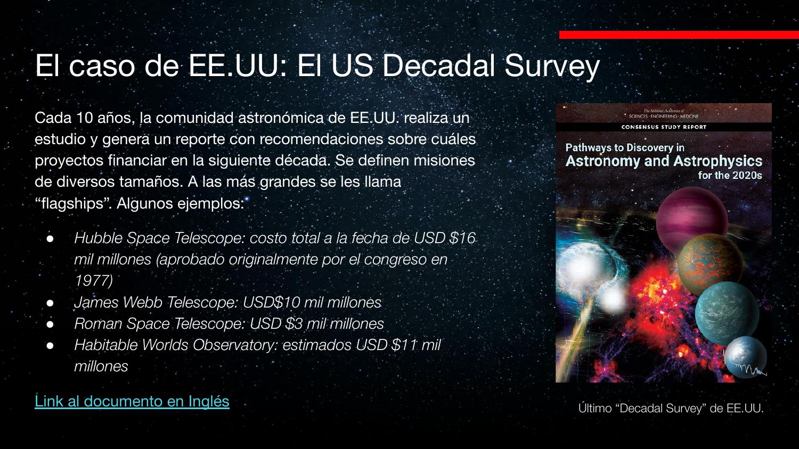
Recomendaciones 2021
- Máxima prioridad NASA: el híbrido LUVOIR + HabEx (que se convirtió en el Habitable Worlds Observatory, sección 7).
- Siguiente prioridad NASA: Origins y Lynx.
- Máxima prioridad NSF: financiar un telescopio de clase 30 m (combinar TMT y GMT — sección 6).
- Otras: CMB-S4 (fondo cósmico de microondas) y ngVLA (sección 8).
Los flagships demoran más de 10 años, así que aparecen en varios Decadals: un proyecto puede ser primera prioridad en uno, recomendarse matarlo en el siguiente, y revivir en el subsiguiente (le pasó a LISA, sección 9). Roman salió «barato» (3 mil M) en parte porque el satélite fue regalado: a la agencia de reconocimiento le sobraban dos telescopios clase Hubble y los ofreció a la comunidad astronómica.
El audio escribe «Decadel/Decay del/Decaden/Decaylor Survey» — es Decadal Survey. También «la Dowley es American Astronomical Society»: el profesor se refiere a que el ejercicio lo lidera la comunidad organizada (el survey lo conducen las National Academies de EE.UU. con amplia participación de la comunidad; la AAS es la sociedad profesional). Y «LCEF/NCEF/NCF» es la NSF; «ANIT» es ANID, su análogo chileno («la NSF es como ANID pero con plata»).
ESA: Cosmic Vision
La versión europea del Decadal: un plan a ~10 años con misiones clase L (Large), M y S.
El plan Cosmic Vision 2015–2025 se creó en 2005 — desfasado respecto del ciclo norteamericano, y con horizonte largo: se planifica una década antes de ejecutar. Los «flagships» europeos se llaman misiones clase L y la idea general es que sean colaboraciones internacionales. Las tres L de este ciclo:
- L1 — JUICE (Jupiter Icy Moons Explorer): lanzada el 14 de abril de 2023 hacia Júpiter, con asistencias gravitacionales en el camino.
- L2 — Athena: telescopio de rayos X; el plan actual (NewAthena) apunta a lanzamiento en 2037.
- L3 — LISA: interferómetro espacial de ondas gravitacionales, planeado para ~2035 (sección 9).
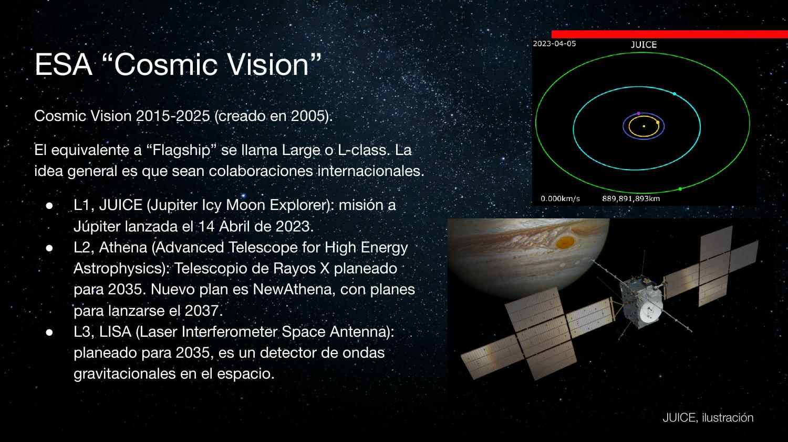
El audio dice que Athena «está planeado para lanzarse en 2017» — imposible (es futuro). La diapositiva confirma: Athena se planeaba para 2035 y el plan NewAthena apunta a 2037. El punto pedagógico del profesor se mantiene: en un plan 2015–2025 se trabaja en misiones que volarán mucho después del período.
Presente cercano: Euclid y Roman
Dos telescopios espaciales de campo amplio para cartografiar la distribución de masa y estudiar la energía oscura.
Euclid (ESA) es un telescopio óptico similar a Hubble pero con gran campo de visión, ubicado en L2 (no en órbita baja como Hubble). Su objetivo: energía oscura. ¿Cómo se estudia algo que no se ve? A través de su efecto sobre la distribución de materia a gran escala (filamentos, cúmulos): hay que mapear pedazos gigantes del cielo, con profundidad y buena resolución a la vez.
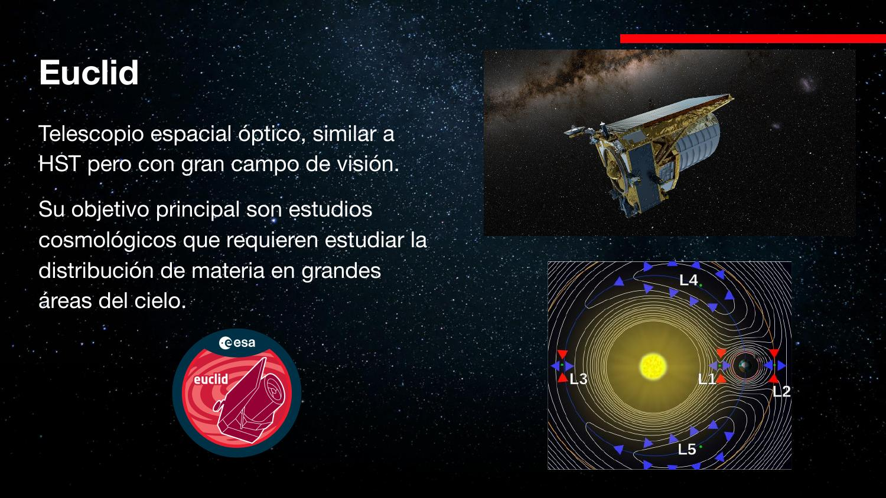
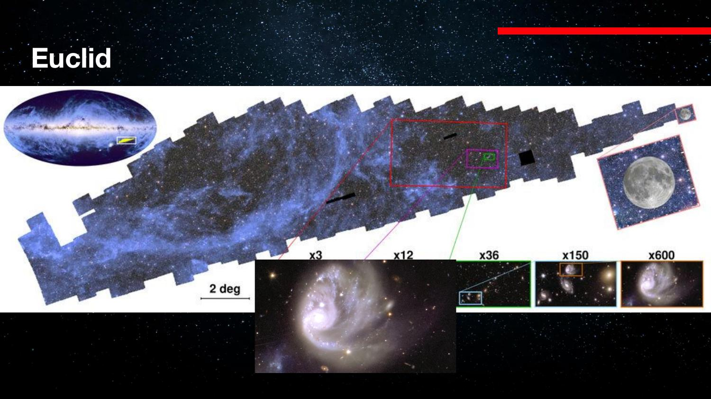
Nancy Grace Roman (NASA) es la contraparte norteamericana: mismo objetivo cosmológico, campo aún mayor y optimizado más hacia el infrarrojo (Euclid es más óptico) — por eso son complementarios. Su hardware viene de uno de los dos telescopios clase Hubble que la agencia de reconocimiento regaló: se reacondicionó para apuntar al cielo en vez de a la Tierra.
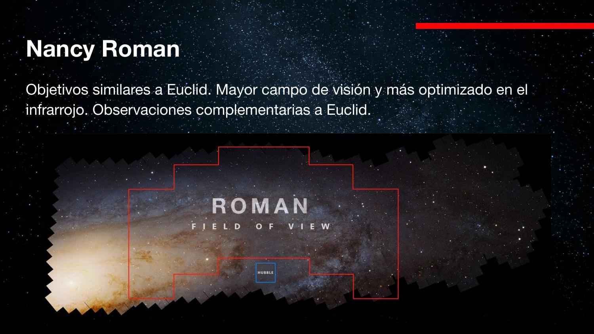
Euclid es un proyecto tipo survey: el telescopio fue construido para el mapa; no se puede pedir tiempo para apuntarlo a otra cosa. Y como Vera Rubin (en tierra, EE.UU.) tiene objetivos similares a Euclid (Europa), hoy se negocian intercambios de datos entre comunidades — otro ejemplo de que los acuerdos políticos son parte del instrumento.
«el satélite mismo lo regaló la CIA»: la donación de los dos telescopios clase Hubble (2012) la hizo la NRO (National Reconnaissance Office), la agencia de satélites de reconocimiento de EE.UU. — precisión externa; la anécdota de clase es correcta en lo esencial.
Gigantes en tierra: ELT, GMT, TMT
La clase 30–40 metros: tres proyectos, plata para menos, y la política de los sitios.
Tres telescopios ópticos gigantes compiten por existir: el ELT europeo (~39 m, en construcción avanzada en Chile), el GMT (Giant Magellan Telescope, cerca de Las Campanas: los espejos están hechos, pero en el sitio solo hay plataforma) y el TMT (Thirty Meter Telescope, pensado para Mauna Kea, Hawái; quizás termine en Canarias). El Decadal recomendó que la NSF financie solo uno entre TMT y GMT — pero las comunidades no han querido converger en un único proyecto y buscan socios externos para construir ambos.
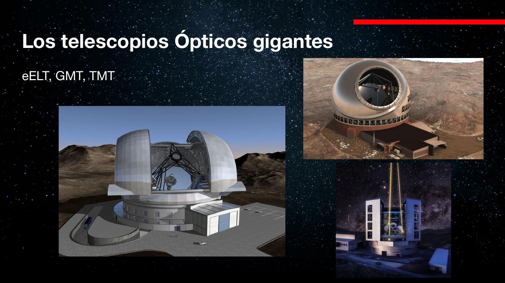
El conflicto de Mauna Kea
La cima del volcán (casi 5000 m) es sitio sagrado para la comunidad hawaiana, que siente incumplidos los acuerdos de las concesiones anteriores (preservar el sitio, retirar los telescopios al final de su vida útil). Se suma un trasfondo de colonialismo y relación con el gobierno de EE.UU. que excede a la astronomía. Físicamente el sitio es excepcional: sobre la capa de humedad, viento laminar sin montañas alrededor → seeing excelente. Canarias es similar, pero las tormentas de arena del Sahara obligan a cerrar semanas al año.
«el Biopian Extremidad» = el European Extremely Large Telescope (ELT), de ~39 m. Y «una de estas cosas cuesta 1,3 millones de euros» → ~1300 millones de euros (mil millones de nuevo perdido). Grandes, pero un orden de magnitud más baratos que un flagship espacial como JWST.
LUVOIR + HabEx = Habitable Worlds Observatory
Dos comunidades, dos conceptos — y un «matrimonio» recomendado por el Decadal 2020.
LUVOIR (Large UV/Optical/IR Surveyor) era el sueño de un super-telescopio espacial UV/óptico/IR: la versión A de 15 m de espejo segmentado, la versión B de 8 m. El UV es hoy un vacío de capacidad: la atmósfera lo bloquea, GALEX murió, Hubble conserva capacidad UV degradada (India lanzó recientemente un telescopio UV pequeño — AstroSat).
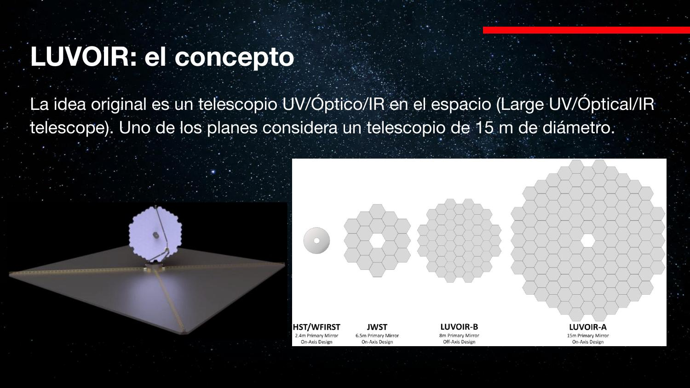
HabEx (Habitable Exoplanet Observatory) venía de la comunidad de exoplanetas: obtener imágenes directas de planetas tipo Tierra y caracterizar sus atmósferas. Su tecnología estrella: el coronógrafo — y en su versión más ambiciosa, una starshade: un segundo satélite con una pantalla en forma de flor que genera un eclipse artificial, bloqueando la luz de la estrella para que no te encandile y puedas ver lo que la orbita.
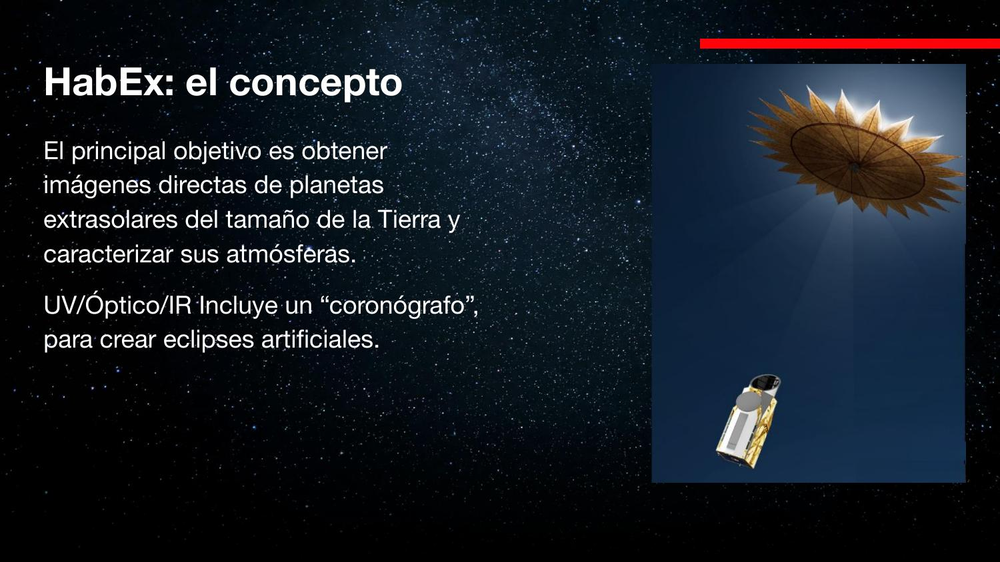
El Decadal 2020 recomendó fusionarlos: el Habitable Worlds Observatory (HWO), propuesto en 2023 — un telescopio de ~6 m (ni los 15 de LUVOIR-A ni tan chico), enfocado en los objetivos de HabEx pero versátil, con capacidad para estudios extragalácticos. Costo estimado: USD 11 mil millones.
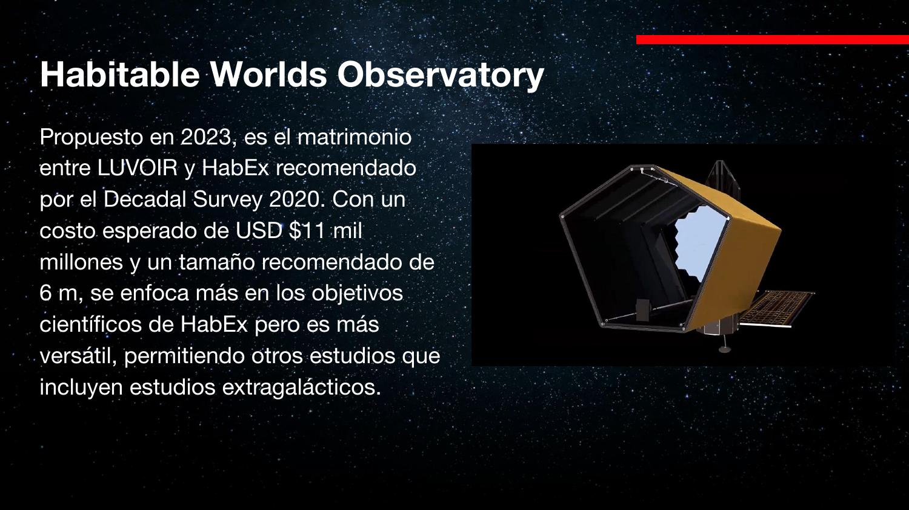
El audio escribe «Luboy, Lugoir, Luer, Luoy, LUGO» → LUVOIR; «havex/HAVEX» → HabEx (Habitable Exoplanet Observatory — el profesor no recordaba la sigla); «habitable world observa tres» → Habitable Worlds Observatory; y «cronógrafo» → coronógrafo (instrumento que oculta el disco estelar; un cronógrafo mide tiempo). Además, según la diapositiva LUVOIR-A es de 15 m (el audio dice 16) y LUVOIR-B de 8 m.
Altas energías y radio: Lynx, Athena, ngVLA
Llenar los vacíos fuera del óptico/IR: rayos X con resolución sub-arcosegundo y un interferómetro continental.
Lynx (NASA)
Los telescopios de rayos X suelen tener pésima resolución espacial y campo chico. Lynx propone campo amplio (22′ × 22′, casi la Luna) con resolución de 0,5 segundos de arco — ¡mejor que un buen seeing óptico en tierra! Eso permitiría pasar de «ahí hay una galaxia en rayos X» a resolver las fuentes individuales dentro de una galaxia. Sería ≥10× más poderoso que Chandra; planeado para ~2036, costo ~USD 5 mil millones.
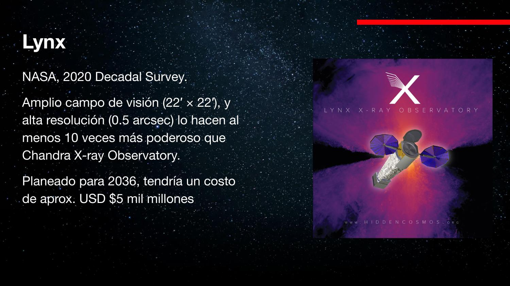
Athena (ESA)
Peor resolución que Lynx (~5″, factor 10), pero con un as bajo la manga: el X-IFU, una Integral Field Unit en rayos X. Un IFU es como un CCD donde cada «pixel» es un espectrógrafo: obtienes un cubo de datos (x, y, λ) — un espectro por cada punto de la imagen. Para objetos extendidos permite mapear qué región emite qué espectro y de dónde sale la energía.
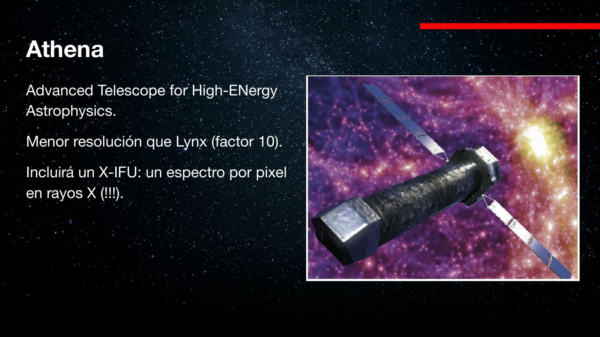
ngVLA (radio)
El next generation VLA: 10× más sensibilidad y resolución que el VLA actual (el de la película Contact) y que ALMA. Diseño: 244 antenas de 18 m + 19 de 6 m (compárese con ALMA: 66 antenas, 54 de ellas de 12 m). El número y tamaño de antenas da la sensibilidad (área recolectora total); la separación entre ellas da la resolución (línea de base). El núcleo estará junto al VLA en Nuevo México, con estaciones medias en Arizona/Texas/México y largas hasta Hawái, Puerto Rico y Canadá — líneas de base continentales.
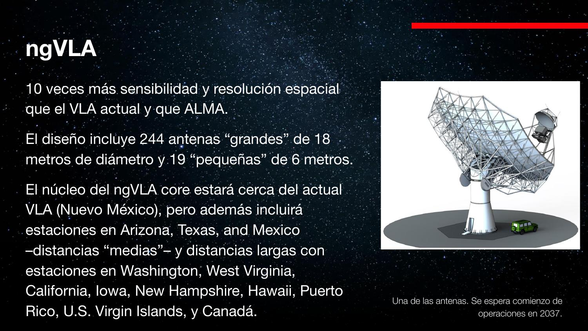
«Links/Linz» → Lynx; «Atena» → Athena; «IFF/IF» → IFU (Integral Field Unit); «NG GLA/NGBLA/decadente Survey» → ngVLA. Sobre ALMA, el audio duda («56 antenas, creo»): ALMA tiene 66 antenas en total, 54 de 12 m y 12 de 7 m (dato externo para precisar).
LISA y el problema del último parsec
Un interferómetro de 2,5 millones de km de brazo para escuchar fusiones de agujeros negros supermasivos.
LISA (Laser Interferometer Space Antenna): tres satélites en formación triangular, unidos por láseres, midiendo cambios de distancia entre sí al paso de una onda gravitacional. Es la misma tecnología de LIGO con una diferencia clave: los brazos no tienen largo constante. Las órbitas hacen que la separación varíe en el tiempo — pero de forma predecible; la onda gravitacional es la perturbación extra sobre ese modelo. Un problema de estimación de señal sobre línea de base móvil, muy familiar para ingeniería de señales.
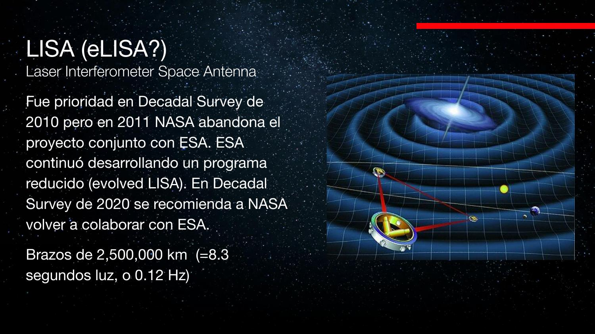
¿Por qué importa? El último parsec
Casi todas las galaxias tienen un agujero negro supermasivo central, y las galaxias se fusionan; el producto final tiene un agujero negro. Ergo, los agujeros negros supermasivos deben fusionarse. Pero el mecanismo conocido para acercar un par orbitante — expulsar material que se lleva energía del sistema — se queda sin material a escala de ~1 parsec: nadie sabe todavía cómo cruzan ese último parsec. Medir la frecuencia y propiedades de estas fusiones con LISA daría la evidencia empírica para resolver este problema abierto.
La historia política de LISA es el ejemplo perfecto de acuerdos y desacuerdos: NASA se bajó en 2011 de un proyecto conjunto (cuando las ondas gravitacionales aún no se detectaban y era «alto riesgo»); ESA siguió sola; tras la detección de 2015 todo el mundo quiso volver — y ahora ESA tiene la prioridad y probablemente EE.UU. quede fuera.
«E LISA / Evolut Visa / EVO LISA / ELISA» → eLISA (evolved LISA), el programa reducido que ESA continuó sola. «mató el rifle» parece ser «mató el proyecto». Y «millones de bases de la masa del Sol» → millones de veces la masa del Sol.
Nuevos actores, basura espacial y el ciclo virtuoso
Xuntian y el modelo chino; Starlink como ruido; y el mensaje final del curso.
Xuntian: mantenimiento en órbita
El proyecto chino Xuntian es un telescopio espacial de ~2 m, clase Hubble en capacidades. Lo extraordinario no es el espejo sino la arquitectura: co-orbita con la estación espacial china (Tiangong), ya en órbita baja, y puede acoplarse a ella periódicamente para cambiar instrumentos, hacer upgrades y reparaciones. Diseño para mantenibilidad — justo lo que Hubble solo logró con costosas misiones del transbordador. Además, el modelo de decisión chino no pasa por consensos comunitarios tipo Decadal: es una forma completamente distinta de fijar y ejecutar prioridades.
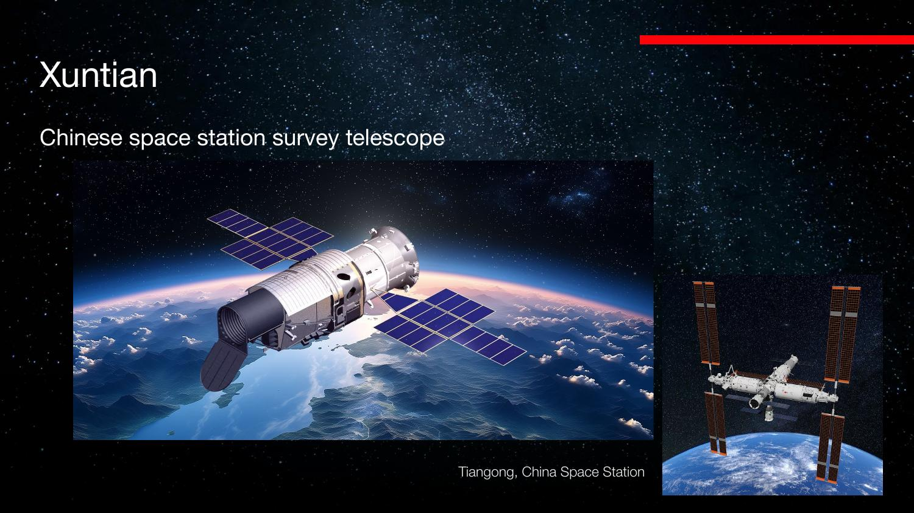
Satélites, ruido y basura espacial
Preguntas del chat: sí, las megaconstelaciones tipo Starlink interfieren — dejan rayas en las imágenes, y para surveys de campo amplio como Vera Rubin la probabilidad de cruce por imagen es alta. Con pocos satélites uno podía «hacerles el quite»; con enjambres de miles ya no. Y sí, los satélites tienen vida útil: algunos se desorbitan al mar de forma controlada, otros se fragmentan en órbita (basura espacial), y existen ideas de misiones de rescate — reimpulsar satélites que pierden órbita (el profesor menciona con cautela un caso tipo Swift) e incluso, algún día, Hubble. Los que están en L2 no son problema de basura cercana.
El mensaje final del curso
Todo el módulo cabe en un diagrama de retroalimentación: los objetivos científicos exigen instrumentos con ciertas características; construirlos requiere desarrollo tecnológico; esa tecnología se apoya en ciencia básica previa (varios premios Nobel mediante), que a su vez genera nuevos objetivos. Un ciclo virtuoso — pero cada vuelta es más cara: los proyectos ya exceden a naciones individuales y requieren cooperación internacional, que depende de una geopolítica que hoy cambia rápido. «Al final la ciencia la hacen los seres humanos, y poner de acuerdo a seres humanos no siempre es trivial. Es más fácil resolver ecuaciones.»
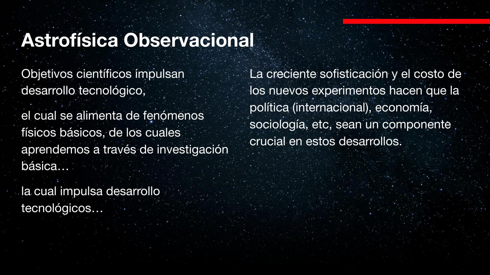
Chile: astronomía de nivel mundial gracias al acceso a máquinas que no podríamos financiar (10% de tiempo de observación de los observatorios instalados). En desarrollo de tecnología propia hay laboratorios incipientes (ondas, IR, óptico) pero «no tenemos 10 mil millones de dólares para poner un telescopio en el espacio». Sobre investigación aplicada: si hay masa crítica de ciencia básica, las aplicaciones llegan solas — exigir aplicación a priori es, en opinión del profesor, un mal enfoque.
«el proyecto Chung Yan» → Xuntian (diapositiva 26); «Estación Espacial Chile» → estación espacial China (Tiangong). El audio duda del estado del proyecto; la diapositiva lo presenta como telescopio de survey asociado a la estación (lanzamiento aún pendiente).
Widgets interactivos
Tres calculadoras para jugar con los números de la clase.
Conceptos clave
Para repaso rápido antes de los exámenes.
| Concepto | Nota |
|---|---|
| Flagship | Proyecto grande del Decadal; ~30 años idea→lanzamiento; miles de millones USD |
| Decadal Survey | Consenso decenal de la comunidad de EE.UU.; white papers; compromiso tácito de NASA/NSF/DOE |
| Cosmic Vision | Plan de ESA; misiones clase L/M/S: JUICE, Athena, LISA |
| Euclid / Roman | Surveys de campo amplio en L2 para energía oscura; óptico vs. IR, complementarios |
| HWO | Fusión LUVOIR+HabEx; ~6 m; coronógrafo; imágenes de exo-Tierras; USD 11 mil M |
| Coronógrafo / starshade | Eclipse artificial: bloquear la estrella para ver sus planetas |
| Lynx / Athena | Rayos X: 0,5″ y campo amplio vs. X-IFU (un espectro por pixel) |
| ngVLA | 244×18 m + 19×6 m; sensibilidad = Σ áreas, resolución = línea de base |
| LISA | Brazos de 2,5 M km (~0,12 Hz); fusiones de agujeros negros supermasivos |
| Último parsec | Problema abierto: cómo dos agujeros negros supermasivos cierran el último pc antes de fusionarse |
| Xuntian | Telescopio chino ~2 m acoplable a Tiangong: mantenimiento en órbita |
| Ciclo virtuoso | Objetivos científicos ⇄ tecnología ⇄ ciencia básica; la política como componente crucial |
Exámenes de práctica
10 exámenes de 5 preguntas (3 alternativas autocorregibles + 2 escritas).